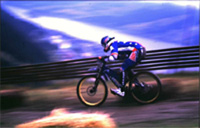
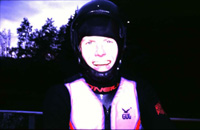
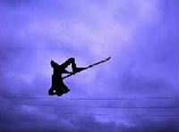
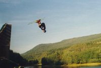

Vi bodde på hytta til Nicholas I nærheten av Åre, og hele turen var vel egentlig mest et skalkeskjul

for å teste trykket I den svenske skimetropolen på lørdag kveld.
Etter å ha fått sett vår dose med fartsfylt sykling, faceplants og knall og fall, begynte kokken Nickolas på en fortreffelig middag, mens resten av folket konsumerte alkohol.
Vi trenger vel ikke røpe mer enn at det ble fuktig og bra og at I letingen etter et fett nachspiel ble en Audi TT med "CRAZY"-nummerskilter avskiltet I forsøk på å imponere et par digge svenske blondiner...
Vannhopping
På vei hjem på søndagen kjørte vi forbi et vannhopp-anlegg på Meråker som vi fikk øye på fra bilvinduet.
Etter å ha saumfart anlegget, fant vi fort ut at hit måtte vi stikke så snart anledningen bød seg.
Det var tre hopp på stedet; 1 knøttlite rett-fram-hopp, 1 sprett-hopp og et uaktuelt selvmordshopp der hoppkanten er 8 meter over vannflaten og man lander i vannet etter å ha vært minst 10-11 meter opp i lufta. Morten Vangen har skrytt på seg at han skal hoppe derfra, men om han gjør det, gjenstår å se.

Tre dager etterpå sto to nervøse karer i latterlige våtdrakter, hjelm og vanlige ski og støvler klare til å utforske Meråkers vannsporttilbud. Jørgen fikk gleden av å prøve det lille hoppet først. Vi var ikke helt sikre på hvor godt man virkelig flyter med ski og skistøvler, så det var best å være litt forsiktige. Alt gikk bra og man hadde mer enn nok oppdrift i vannet. Det går ikke spesielt fort å svømme med alt utstyret, noe som var litt kjedelig i og med at vannet i et gjennomsnittlig tjern på en sur høstdag i Trøndelag ikke er særlig varmt.
Etter et oppvarmningshopp var det bare å gå over på det halvstore hoppet. Dette er et ordentlig sprett-hopp som det er vanskelig å hoppe oppreist på. Arnes forsøk på et vanlig hopp endte i en ufrivillig forlengs salto. Allikevel er det Martin Hasle som til dags dato er Nr. 1 i å ta noe helt annet enn det man prøver på. Martin gikk for baklengs salto, men endte opp med dobbel forlengs, og det to ganger på rad!!!

Jørgen regjerte hoppinga, og fikk raskt roen på dobbel baklengs. I forsøket på trippel bakoversalto fant han derimot ut at det faktisk gikk an å slå seg en smule hvis man lander mitt på ryggen fra en høyde på 7 meter. Hans kjære svenske-Åsa, som han nettopp hadde sjekket opp ved å ta baklengs salto på dansegulvet i Åre, trådde trøstende til, og snart var Jørgen mer opptatt med å kline enn med å ha vondt i ryggen.
Etterhvert hoppet også Åsa uti vannet og skal derfor ha kreditt for å være eneste jente i tjernet.

Det skal sies at vannhopping er en glimrende måte å lære seg å hoppe på. Man kan prøve på helt nye ting uten å skade seg, og et eneste man trenger er våtdrakt og hjelm, i tillegg til det vanlige skiutstyret. Alf og Arne kan dessuten anbefale bruk av skistoppere i og med at begge to har en ski liggende på bunn av tjernet. Eventuelle dykkere i klubben kan sende et elektronisk bre til redaksjonen, da det er utlovet en dusør på en halvliter på byen per ski som blir hentet opp!
Vannhoppsesongen er utvilsomt på hell, men for huga hoppere er det fortsatt mulig å ta seg en tur så lenge man har en god våtdrakt. Husk at også i år er det big-jump-konkurranse under skifestivalen, og hvem har vel lyst til å gjøre det dårlig der…..
|